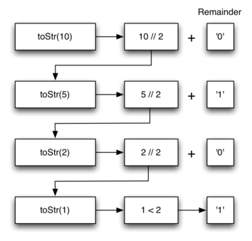

Recursion¶
{chap:recursion}
Objectives¶
The goals for this chapter are as follows:
- To understand that complex problems that may otherwise be difficult to solve may have a simple recursive solution.
- To learn how to formulate programs recursively.
- To understand and apply the three laws of recursion.
- To understand recursion as a form of iteration.
- To implement the recursive formulation of a problem.
- To understand how recursion is implemented by a computer system.
What Is Recursion?¶
Recursion is a method of solving problems that involves breaking a problem down into smaller and smaller subproblems until you get to a small enough problem that it can be solved trivially. Usually recursion involves a function calling itself. While it may not seem like much on the surface, recursion allows us to write elegant solutions to problems that may otherwise be very difficult to program.
Calculating the Sum of a List of Numbers¶
We will begin our investigation with a simple problem that you already know how to solve without using recursion. Suppose that you want to calculate the sum of a list of numbers such as: \([1, 3, 5, 7, 9]\). An iterative function that computes the sum is shown in Listing {itsum}. The function uses an accumulator variable (theSum) to compute a running total of all the numbers in the list by starting with \(0\) and adding each number in the list.
[caption=The Iterative Sum Function,label=itsum,float=htb,index={listsum}]
def listsum(numList):
theSum = 0
for i in numList:
theSum = theSum + i
return theSum
Pretend for a minute that you do not have while loops or for loops. How would you compute the sum of a list of numbers? If you were a mathematician you might start by recalling that addition is a function that is defined for two parameters, a pair of numbers. To redefine the problem from adding a list to adding pairs of numbers, we could rewrite the list as a fully parenthesized expression. Such an expression looks like this: \(((((1 + 3) + 5) + 7) + 9)\). We can also parenthesize the expression the other way around, \((1 + (3 + (5 + (7 + 9))))\). Notice that the innermost set of parentheses, \((7 + 9)\), is a problem that we can solve without a loop or any special constructs. In fact, we can use the following sequence of simplifications to compute a final sum.
How can we take this idea and turn it into a Python program? First, let’s restate the sum problem in terms of Python lists. We might say the the sum of the list numList is the sum of the first element of the list (numList[0]), and the sum of the numbers in the rest of the list (numList[1:]). To state it in a functional form:
In this equation \(first(numList)\) returns the first element of the list and \(rest(numList)\) returns a list of everything but the first element. This is easily expressed in Python as shown in Listing {recsum}.
{escapeinside={#//}{^^M}}
[caption={Recursive listSum},label=recsum,float=htb,index={listsum}]
def listsum(numList):
if len(numList) == 1: #// \label{recsum:bc}
return numList[0]
else:
return numList[0] + listsum(numList[1:]) #// \label{recsum:rec}
There are a few key ideas in this listing to look at. First, on line {recsum:bc} we are checking to see if the list is one element long. This check is crucial and is our escape clause from the function. The sum of a list of length 1 is trivial; it is just the number in the list. Second, on line {recsum:rec} our function calls itself! This is the reason that we call the listsum algorithm recursive. A recursive function is a function that calls itself.
Figure {fig:recsumin} shows the series of recursive calls that are needed to sum the list \([1, 3, 5, 7, 9]\). You should think of this series of calls as a series of simplifications. Each time we make a recursive call we are solving a smaller problem, until we reach the point where the problem cannot get any smaller.

image
{Series of Recursive Calls Adding a List of Numbers} {fig:recsumin}
When we reach the point where the problem is as simple as it can get, we begin to piece together the solutions of each of the small problems until the initial problem is solved. Figure {fig:recsumout} shows the additions that are performed as listsum works its way backward through the series of calls. When listsum returns from the topmost problem, we have the solution to the whole problem.

image
{Series of Recursive Returns from Adding a List of Numbers} {fig:recsumout}
The Three Laws of Recursion¶
Like the robots of Asimov, all recursive algorithms must obey three important laws:
- A recursive algorithm must have a base case.
- A recursive algorithm must change its state and move toward the base case.
- A recursive algorithm must call itself, recursively.
Let’s look at each one of these laws in more detail and see how it was used in the listsum algorithm. First, a base case is the condition that allows the algorithm to stop recursing. A base case is typically a problem that is small enough to solve directly. In the listsum algorithm the base case is a list of length 1.
To obey the second law, we must arrange for a change of state that moves the algorithm toward the base case. A change of state means that some data that the algorithm is using is modified. Usually the data that represents our problem gets smaller in some way. In the listsum algorithm our primary data structure is a list, so we must focus our state-changing efforts on the list. Since the base case is a list of length 1, a natural progression toward the base case is to shorten the list. This is exactly what happens on line {recsum:rec} of Listing {recsum} when we call listsum with a shorter list.
The final law is that the algorithm must call itself. This is the very definition of recursion. Recursion is a confusing concept to many beginning programmers. As a novice programmer, you have learned that functions are good because you can take a large problem and break it up into smaller problems. The smaller problems can be solved by writing a function to solve each problem. When we talk about recursion it may seem that we are talking ourselves in circles. We have a problem to solve with a function, but that function solves the problem by calling itself! But the logic is not circular at all; the logic of recursion is an elegant expression of solving a problem by breaking it down into a smaller and easier problems.
In the remainder of this chapter we will look at more examples of recursion. In each case we will focus on designing a solution to a problem by using the three laws of recursion.
Converting an Integer to a String in Any Base¶
Suppose you want to convert an integer to a string in some base between binary and hexadecimal. For example, convert the integer 10 to its string representation in decimal as "10", or to its string representation in binary as "1010". While there are many algorithms to solve this problem, including the algorithm discussed in section {sec:dectobin}, the recursive formulation of the problem is very elegant.
Let’s look at a concrete example using base 10 and the number 769. Suppose we have a sequence of characters corresponding to the first 10 digits, like convString = "0123456789". It is easy to convert a number less than 10 to its string equivalent by looking it up in the sequence. For example, if the number is 9, then the string is convString[9] or "9". If we can arrange to break up the number 769 into three single-digit numbers, 7, 6, and 9, then converting it to a string is simple. A number less than 10 sounds like a good base case.
Knowing what our base is suggests that the overall algorithm will involve three components:
- Reduce the original number to a series of single-digit numbers.
- Convert the single digit-number to a string using a lookup.
- Concatenate the single-digit strings together to form the final result.
The next step is to figure out how to change state and make progress toward the base case. Since we are working with an integer, let’s consider what mathematical operations might reduce a number. The most likely candidates are division and subtraction. While subtraction might work, it is unclear what we should subtract from what. Integer division with remainders gives us a clear direction. Let’s look at what happens if we divide a number by the base we are trying to convert to.
Using integer division to divide 769 by 10, we get 76 with a remainder of 9. This gives us two good results. First, the remainder is a number less than our base that can be converted to a string immediately by lookup. Second, we get a number that is smaller than our original and moves us toward the base case of having a single number less than our base. Now our job is to convert 76 to its string representation. Again we will use integer division plus remainder to get results of 7 and 6 respectively. Finally, we have reduced the problem to converting 7, which we can do easily since it satisfies the base case condition of \(n < base\), where \(base = 10\). The series of operations we have just performed is illustrated in Figure {fig:tostr}. Notice that the numbers we want to remember are in the remainder boxes along the right side of the diagram.

image
{Converting an Integer to a String in Base 10} {fig:tostr}
Listing {rectostr} shows the Python code that implements the algorithm outlined above for any base between 2 and 16.
[caption={Converting an Integer to a String in Base 2--16},label=rectostr,float=htb,index={toStr}]
def toStr(n,base):
convertString = "0123456789ABCDEF"
if n < base: #// \label{rectostr:bc}
return convertString[n]
else:
return toStr(n//base,base) + convertString[n%base] #// \label{rectostr:rec}
Notice that in line {rectostr:bc} we check for the base case where n is less than the base we are converting to. When we detect the base case, we stop recursing and simply return the string from the convertString sequence. In line {rectostr:rec} we satisfy both the second and third laws–by making the recursive call and by reducing the problem size–using division.
Let’s trace the algorithm again; this time we will convert the number 10 to its base 2 string representation ("1010").
image
{Converting the Number 10 to its Base 2 String Representation} {fig:tostr2}
Figure {fig:tostr2} shows that we get the results we are looking for, but it looks like the digits are in the wrong order. The algorithm works correctly because we make the recursive call first on line {rectostr:rec}, then we add the string representation of the remainder. If we reversed returning the convertString lookup and returning the toStr call, the resulting string would be backward! But by delaying the concatenation operation until after the recursive call has returned, we get the result in the proper order. This should remind you of our discussion of stacks back in Chapter {chap:basicds}.
Stack Frames: Implementing Recursion¶
Suppose that instead of concatenating the result of the recursive call to toStr with the string from convertString, we modified our algorithm to push the strings onto a stack prior to making the recursive call. The code for this modified algorithm is shown in Listing {recstack:lst}.
[caption=Pushing the Strings onto a Stack,label=recstack:lst,float=htb,index={toStr}]
rStack = Stack()
def toStr(n,base):
convertString = "0123456789ABCDEF"
if n < base:
rStack.push(convertString[n])
else:
rStack.push(convertString[n % base])
toStr(n // base, base)
Each time we make a call to toStr, we push a character on the stack. Returning to the previous example we can see that after the fourth call to toStr the stack would look like Figure {recstack:fig}. Notice that now we can simply pop the characters off the stack and concatenate them into the final result, "1010".
{Strings Placed on the Stack During Conversion} {recstack:fig}
The previous example gives us some insight into how Python implements a recursive function call. When a function is called in Python, a stack frame is allocated to handle the local variables of the function. When the function returns, the return value is left on top of the stack for the calling function to access. Figure {fig:callstack} illustrates the call stack after the return statement on line {rectostr:bc}.
{Call Stack Generated from toStr(10,2)} {fig:callstack}
Notice that the call to toStr(2//2,2) leaves a return value of "1" on the stack. This return value is then used in place of the function call (toStr(1,2)) in the expression {“1” + convertString[2%2]}, which will leave the string "10" on the top of the stack. In this way, the Python call stack takes the place of the stack we used explicitly in Listing {recstack:lst}. In our list summing example, you can think of the return value on the stack taking the place of an accumulator variable.
The stack frames also provide a scope for the variables used by the function. Even though we are calling the same function over and over, each call creates a new scope for the variables that are local to the function.
If you keep this idea of the stack in your head, you will find it much easier to write a proper recursive function.
Complex Recursive Problems¶
In the previous sections we looked at some problems that are relatively easy to solve, and some graphically interesting problems that can help us gain a mental model of what is happening in a recursive algorithm. In this section we will look at some problems that are really difficult to solve using an iterative programming style but are very elegant and easy to solve using recursion. We will finish up by looking at a deceptive problem that at first looks like it has an elegant recursive solution but in fact does not.
Tower of Hanoi¶
The Tower of Hanoi puzzle was invented by the French mathematician Edouard Lucas in 1883. He was inspired by a legend that tells of a Hindu temple where the puzzle was presented to young priests. At the beginning of time, the priests were given three poles and a stack of 64 gold disks, each disk a little smaller than the one beneath it. Their assignment was to transfer all 64 disks from one of the three poles to another, with two important constraints. They could only move one disk at a time, and they could never place a larger disk on top of a smaller one. The priests worked very efficiently, day and night, moving one disk every second. When they finished their work, the legend said, the temple would crumble into dust and the world would vanish.
Although the legend is interesting, you need not worry about the world ending any time soon. The number of moves required to correctly move a tower of 64 disks is \(2^{64}-1 = 18,446,744,073,709,551,615\). At a rate of one move per second, that is 584,942,417,355 years! Clearly there is more to this puzzle than meets the eye.
Figure {fig:hanoi} shows an example of a configuration of disks in the middle of a move from the first peg to the third. Notice that, as the rules specify, the disks on each peg are stacked so that smaller disks are always on top of the larger disks. If you have not tried to solve this puzzle before, you should try it now. You do not need fancy disks and poles–a pile of books or pieces of paper will work.

image {An Example Arrangement of Disks for the Tower of Hanoi} {fig:hanoi}
How do we go about solving this problem recursively? How would you go about solving this problem at all? What is our base case? Let’s think about this problem from the bottom up. Suppose you have a tower of five disks, originally on peg one. If you already knew how to move a tower of four disks to peg two, you could then easily move the bottom disk to peg three, and then move the tower of four from peg two to peg three. But what if you do not know how to move a tower of height four? Suppose that you knew how to move a tower of height three to peg three; then it would be easy to move the fourth disk to peg two and move the three from peg three on top of it. But what if you do not know how to move a tower of three? How about moving a tower of two disks to peg two and then moving the third disk to peg three, and then moving the tower of height two on top of it? But what if you still do not know how to do this? Surely you would agree that moving a single disk to peg three is easy enough, trivial you might even say. This sounds like a base case in the making.
Here is a high-level outline of how to move a tower from the starting pole, to the goal pole, using an intermediate pole:
- Move a tower of height-1 to an intermediate pole, using the final pole.
- Move the remaining disk to the final pole.
- Move the tower of height-1 from the intermediate pole to the final pole using the original pole.
As long as we always obey the rule that the larger disks remain on the bottom of the stack, we can use the three steps above recursively, treating any larger disks as though they were not even there. The only thing missing from the outline above is the identification of a base case. The simplest Tower of Hanoi problem is a tower of one disk. In this case, we need move only a single disk to its final destination. A tower of one disk will be our base case. In addition, the steps outlined above move us toward the base case by reducing the height of the tower in steps 1 and 3. Listing {lst:hanoi} shows the Python code to solve the Tower of Hanoi puzzle.
[caption=Python Code for the Tower of Hanoi,label=lst:hanoi,float=htbp,index={moveTower}]
def moveTower(height,fromPole, toPole, withPole):
if height >= 1:
moveTower(height-1,fromPole,withPole,toPole) #// \label{hanoi:r1}
moveDisk(fromPole,toPole)
moveTower(height-1,withPole,toPole,fromPole) #// \label{hanoi:r2}
Notice that the code in Listing {lst:hanoi} is almost identical to the English description. The key to the simplicity of the algorithm is that we make two different recursive calls, one on line {hanoi:r1} and a second on line {hanoi:r2}. On line {hanoi:r1} we move all but the bottom disk on the initial tower to an intermediate pole. The next line simply moves the bottom disk to its final resting place. Then on line {hanoi:r2} we move the tower from the intermediate pole to the top of the largest disk. The base case is detected when the tower height is 0; in this case there is nothing to do, so the moveTower function simply returns. The important thing to remember about handling the base case this way is that simply returning from moveTower is what finally allows the moveDisk function to be called.
The function moveDisk, shown in Listing {lst:movedisk}, is very simple. All it does is print out that it is moving a disk from one pole to another. If you type in and run the moveTower program you can see that it gives you a very efficient solution to the puzzle.
[caption=Python Code to Move One Disk ,label=lst:movedisk,float=htbp,index={moveDisk}]
def moveDisk(fp,tp):
print("moving disk from %d to %d\n" % (fp,tp))
Now that you have seen the code for both moveTower and moveDisk, you may be wondering why we do not have a data structure that explicitly keeps track of what disks are on what poles. Here is a hint: if you were going to explicitly keep track of the disks, you would probably use three Stack objects, one for each pole. The answer is that Python provides the stacks that we need implicitly through the call stack, just like it did in the toStr problem.
Exploring a Maze¶
In this section we will look at a problem that has relevance to the expanding world of robotics, finding your way out of a maze. If you have a Roomba vacuum cleaner for your dorm room (don’t all college students?) you will wish that you could reprogram it using what you have learned in this section. The problem we want to solve is to help our turtle find its way out of a virtual maze. The maze problem has roots as deep as the Greek myth about Theseus who was sent into a maze to kill the minotaur. Theseus used a ball of thread to help him find his way back out again once he had finished off the beast. In our problem we will assume that our turtle is dropped down somewhere into the middle of the maze and must find its way out. Look at Figure {fig:mazescreen} to get an idea of where we are going in this section.
{The Finished Maze Search Program} {fig:mazescreen}
To make it easier for us we will assume that our maze is divided up into “squares.” Each square of the maze is either open or occupied by a section of wall. The turtle can only pass through the open squares of the maze. If the turtle bumps into a wall it must try a different direction. The turtle will require a systematic procedure to find its way out of the maze. Here is the procedure:
- From our starting position we will first try going North one square and then recursively try our procedure from there.
- If we are not successful by trying a Northern path as the first step then we will take a step to the South and recursively repeat our procedure.
- If South does not work then we will try a step to the West as our first step and recursively apply our procedure.
- If North, South, and West have not been successful then apply the procedure recursively from a position one step to our East.
- If none of these directions works then there is no way to get out of the maze and we fail.
Now, that sounds pretty easy, but there are a couple of details to talk about first. Suppose we take our first recursive step by going North. By following our procedure our next step would also be to the North. But if the North is blocked by a wall we must look at the next step of the procedure and try going to the South. Unfortunately that step to the south brings us right back to our original starting place. If we apply the recursive procedure from there we will just go back one step to the North and be in an infinite loop. So, we must have a strategy to remember where we have been. In this case we will assume that we have a bag of bread crumbs we can drop along our way. If we take a step in a certain direction and find that there is a bread crumb already on that square, we know that we should immediately back up and try the next direction in our procedure. As we will see when we look at the code for this algorithm, backing up is as simple as returning from a recursive function call.
As we do for all recursive algorithms let us review the base cases. Some of them you may already have guessed based on the description in the previous paragraph. In this algorithm, there are four base cases to consider:
- The turtle has run into a wall. Since the square is occupied by a wall no further exploration can take place.
- The turtle has found a square that has already been explored. We do not want to continue exploring from this position or we will get into a loop.
- We have found an outside edge, not occupied by a wall. In other words we have found an exit from the maze.
- We have explored a square unsuccessfully in all four directions.
For our program to work we will need to have a way to represent the maze. To make this even more interesting we are going to use the turtle module to draw and explore our maze so we can watch this algorithm in action. The maze object will provide the following methods for us to use in writing our search algorithm:
- __init__ Reads in a data file representing a maze, initializes the internal representation of the maze, and finds the starting position for the turtle.
- drawMaze Draws the maze in a window on the screen.
- updatePosition Updates the internal representation of the maze and changes the position of the turtle in the window.
- isExit Checks to see if the current position is an exit from the maze.
The Maze class also overloads the index operator [] so that our algorithm can easily access the status of any particular square.
Let’s examine the code for the search function which we call searchFrom. The code is shown in Listing {lst:mazesearch}. Notice that this function takes three parameters: a maze object, the starting row, and the starting column. This is important because as a recursive function the search logically starts again with each recursive call.
[caption=The Maze Search Function,label=lst:mazesearch,float=htb,basicstyle=\footnotesize]
def searchFrom(maze, startRow, startColumn):
maze.updatePosition(startRow, startColumn)
# Check for base cases:
# 1. We have run into an obstacle, return false
if maze[startRow][startColumn] == OBSTACLE :
return False
# 2. We have found a square that has already been explored
if maze[startRow][startColumn] == TRIED:
return False
# 3. Success, an outside edge not occupied by an obstacle
if maze.isExit(startRow,startColumn):
maze.updatePosition(startRow, startColumn, PART_OF_PATH)
return True
maze.updatePosition(startRow, startColumn, TRIED)
# Otherwise, use logical short circuiting to try each
# direction in turn (if needed)
found = searchFrom(maze, startRow-1, startColumn) or \
searchFrom(maze, startRow+1, startColumn) or \
searchFrom(maze, startRow, startColumn-1) or \
searchFrom(maze, startRow, startColumn+1)
if found:
maze.updatePosition(startRow, startColumn, PART_OF_PATH)
else:
maze.updatePosition(startRow, startColumn, DEAD_END)
return found
As you look through the algorithm you will see that the first thing the code does (line 4) is call updatePosition. This is simply to help you visualize the algorithm so that you can watch exactly how the turtle explores its way through the maze. Next the algorithm checks for the first three of the four base cases: Has the turtle run into a wall (line 5)? Has the turtle circled back to a square already explored (line 8)? Has the turtle found an exit (line 12)? If none of these conditions is true then we continue the search recursively.
You will notice that in the recursive step there are four recursive calls to searchFrom. It is hard to predict how many of these recursive calls will be used since they are all connected by or statements. If the first call to searchFrom returns True then none of the last three calls would be needed. You can interpret this as meaning that a step to (row-1,column) (or North if you want to think geographically) is on the path leading out of the maze. If there is not a good path leading out of the maze to the North then the next recursive call is tried, this one to the South. If South fails then try West, and finally East. If all four recursive calls return false then we have found a dead end. You should download or type in the whole program and experiment with it by changing the order of these calls.
The code for the Maze class is shown in Listings {lst:maze} – {lst:maze3}. The __init__ method takes the name of a file as its only parameter. This file is a text file that represents a maze by using “+” characters for walls, spaces for open squares, and the letter “S” to indicate the starting position. Figure {fig:exmaze} is an example of a maze data file. The internal representation of the maze is a list of lists. Each row of the mazelist instance variable is also a list. This secondary list contains one character per square using the characters described above. For the data file in Figure {fig:exmaze} the internal representation looks like the following:
[ ['+','+','+','+',...,'+','+','+','+','+','+','+'],
['+',' ',' ',' ',...,' ',' ',' ','+',' ',' ',' '],
['+',' ','+',' ',...,'+','+',' ','+',' ','+','+'],
['+',' ','+',' ',...,' ',' ',' ','+',' ','+','+'],
['+','+','+',' ',...,'+','+',' ','+',' ',' ','+'],
['+',' ',' ',' ',...,'+','+',' ',' ',' ',' ','+'],
['+','+','+','+',...,'+','+','+','+','+',' ','+'],
['+',' ',' ',' ',...,'+','+',' ',' ','+',' ','+'],
['+',' ','+','+',...,' ',' ','+',' ',' ',' ','+'],
['+',' ',' ',' ',...,' ',' ','+',' ','+','+','+'],
['+','+','+','+',...,'+','+','+',' ','+','+','+']]
The drawMaze method uses this internal representation to draw the initial view of the maze on the screen, see Figure {fig:mazescreen}.
++++++++++++++++++++++ + + ++ ++ + + + + +++ + ++ + + + ++ ++++ + ++ +++ ++++++ +++ + + + ++ ++ + +++++ ++++++ +++++ + + + +++++++ + + + +++++++ S + + + + +++ ++++++++++++++++++ +++{An Example Maze Data File} {fig:exmaze}
The updatePosition method, as shown in Listing {lst:maze1} uses the same internal representation to see if the turtle has run into a wall. It also updates the internal representation with a “.” or “-” to indicate that the turtle has visited a particular square or if the square is part of a dead end. In addition, the updatePosition method uses two helper methods, moveTurtle and dropBreadCrumb, to update the view on the screen.
Finally, the isExit method uses the current position of the turtle to test for an exit condition. An exit condition is whenever the turtle has navigated to the edge of the maze, either row zero or column zero, or the far right column or the bottom row.
[caption=The Maze Class,label=lst:maze,index={Maze},float=htb,basicstyle=\footnotesize]
class Maze:
def __init__(self,mazeFileName):
rowsInMaze = 0
columnsInMaze = 0
self.mazelist = []
mazeFile = open(mazeFileName,'r')
rowsInMaze = 0
for line in mazeFile:
rowList = []
col = 0
for ch in line[:-1]:
rowList.append(ch)
if ch == 'S':
self.startRow = rowsInMaze
self.startCol = col
col = col + 1
rowsInMaze = rowsInMaze + 1
self.mazelist.append(rowList)
columnsInMaze = len(rowList)
self.rowsInMaze = rowsInMaze
self.columnsInMaze = columnsInMaze
self.xTranslate = -columnsInMaze/2
self.yTranslate = rowsInMaze/2
self.t = Turtle(shape='turtle')
setup(width=600,height=600)
setworldcoordinates(-(columnsInMaze-1)/2-.5,
-(rowsInMaze-1)/2-.5,
(columnsInMaze-1)/2+.5,
(rowsInMaze-1)/2+.5)
[caption=The Maze Class,label=lst:maze1,float=h!tb,basicstyle=\footnotesize]
def drawMaze(self):
for y in range(self.rowsInMaze):
for x in range(self.columnsInMaze):
if self.mazelist[y][x] == OBSTACLE:
self.drawCenteredBox(x+self.xTranslate,
-y+self.yTranslate,
'tan')
self.t.color('black','blue')
def drawCenteredBox(self,x,y,color):
tracer(0)
self.t.up()
self.t.goto(x-.5,y-.5)
self.t.color('black',color)
self.t.setheading(90)
self.t.down()
self.t.begin_fill()
for i in range(4):
self.t.forward(1)
self.t.right(90)
self.t.end_fill()
update()
tracer(1)
def moveTurtle(self,x,y):
self.t.up()
self.t.setheading(self.t.towards(x+self.xTranslate,
-y+self.yTranslate))
self.t.goto(x+self.xTranslate,-y+self.yTranslate)
def dropBreadcrumb(self,color):
self.t.dot(color)
def updatePosition(self,row,col,val=None):
if val:
self.mazelist[row][col] = val
self.moveTurtle(col,row)
if val == PART_OF_PATH:
color = 'green'
elif val == OBSTACLE:
color = 'red'
elif val == TRIED:
color = 'black'
elif val == DEAD_END:
color = 'red'
else:
color = None
if color:
self.dropBreadcrumb(color)
Dynamic Programming¶
Many programs in computer science are written to optimize some value; for example, find the shortest path between two points, find the line that best fits a set of points, or find the smallest set of objects that satisfies some criteria. There are many strategies that computer scientists use to solve these problems. One of the goals of this book is to expose you to several different problem solving strategies. Dynamic programming is one strategy for these types of optimization problems. {bellman52,masek80,hu81}
A classic example of an optimization problem involves making change using the fewest coins. Suppose you are a programmer for a vending machine manufacturer. Your company wants to streamline effort by giving out the fewest possible coins in change for each transaction. Suppose a customer puts in a dollar bill and purchases an item for 37 cents. What is the smallest number of coins you can use to make change? The answer is six coins: two quarters, one dime, and three pennies. How did we arrive at the answer of six coins? We start with the largest coin in our arsenal (a quarter) and use as many of those as possible, then we go to the next lowest coin value and use as many of those as possible. This first approach is called a greedy method because we try to solve as big a piece of the problem as possible right away.
[caption=The Maze Class,label=lst:maze3,float=tb,basicstyle=\footnotesize]
def isExit(self,row,col):
return (row == 0 or
row == self.rowsInMaze-1 or
col == 0 or
col == self.columnsInMaze-1 )
def __getitem__(self,idx):
return self.mazelist[idx]
The greedy method works fine when we are using U.S. coins, but suppose that your company decides to deploy its vending machines in Lower Elbonia where, in addition to the usual 1, 5, 10, and 25 cent coins they also have a 21 cent coin. In this instance our greedy method fails to find the optimal solution for 63 cents in change. With the addition of the 21 cent coin the greedy method would still find the solution to be six coins. However, the optimal answer is three 21 cent pieces.
Let’s look at a method where we could be sure that we would find the optimal answer to the problem. Since this section is about recursion, you may have guessed that we will use a recursive solution. Let’s start with identifying the base case. If we are trying to make change for the same amount as the value of one of our coins, the answer is easy, one coin.
If the amount does not match we have several options. What we want is the minimum of a penny plus the number of coins needed to make change for the original amount minus a penny, or a nickel plus the number of coins needed to make change for the original amount minus five cents, or a dime plus the number of coins needed to make change for the original amount minus ten cents, and so on. So the number of coins needed to make change for the original amount can be computed according to the following: .. math:
numCoins =
min
\begin{cases}
1 + numCoins(original amount - 1) \\
1 + numCoins(original amount - 5) \\
1 + numCoins(original amount - 10) \\
1 + numCoins(original amount - 25)
\end{cases}
\label{eqn:change}
The algorithm for doing what we have just described is shown in Listing {lst:change1}. In line {lst:c1bc} we are checking our base case; that is, we are trying to make change in the exact amount of one of our coins. If we do not have a coin equal to the amount of change, we make recursive calls for each different coin value less than the amount of change we are trying to make. Line {lst:c1li} shows how we filter the list of coins to those less than the current value of change using a list comprehension. The recursive call also reduces the total amount of change we need to make by the value of the coin selected. The recursive call is made in line {lst:c1rc}. Notice that on that same line we add 1 to our number of coins to account for the fact that we are using a coin. Just adding 1 is the same as if we had made a recursive call asking where we satisfy the base case condition immediately.
[caption=Recursive Version of Coin Optimization Problem,label=lst:change1,float=htb,index={recMC}]
def recMC(coinValueList,change):
minCoins = change
if change in coinValueList: #// \label{lst:c1bc}
return 1
else:
for i in [c for c in coinValueList if c <= change]: #// \label{lst:c1li}
numCoins = 1 + recMC(coinValueList,change-i) #// \label{lst:c1rc}
if numCoins < minCoins:
minCoins = numCoins
return minCoins
recMC([1,5,10,25],63)
The trouble with the algorithm in Listing {lst:change1} is that it is extremely inefficient. In fact, it takes 67,716,925 recursive calls to find the optimal solution to the 4 coins, 63 cents problem! To understand the fatal flaw in our approach look at Figure {fig:c1ct}, which illustrates a small fraction of the 377 function calls needed to find the optimal set of coins to make change for 26 cents.
Each node in the graph corresponds to a call to recMC. The label on the node indicates the amount of change for which we are computing the number of coins. The label on the arrow indicates the coin that we just used. By following the graph we can see the combination of coins that got us to any point in the graph. The main problem is that we are re-doing too many calculations. For example, the graph shows that the algorithm would recalculate the optimal number of coins to make change for 15 cents at least three times. Each of these computations to find the optimal number of coins for 15 cents itself takes 52 function calls. Clearly we are wasting a lot of time and effort recalculating old results.

image {Call Tree for Listing {lst:change1}. } {fig:c1ct}
The key to cutting down on the amount of work we do is to remember some of the past results so we can avoid recomputing results we already know. A simple solution is to store the results for the minimum number of coins in a table when we find them. Then before we compute a new minimum, we first check the table to see if a result is already known. If there is already a result in the table, we use the value from the table rather than recomputing. Listing {lst:change2} shows a modified algorithm to incorporate our table lookup scheme.
[caption=Recursive Coin Optimization Using Table Lookup,label=lst:change2,float=htbp]
def recDC(coinValueList,change,knownResults):
minCoins = change
if change in coinValueList:
knownResults[change] = 1
return 1
elif knownResults[change] > 0: #// \label{lst:c2bc}
return knownResults[change]
else:
for i in [c for c in coinValueList if c <= change]:
numCoins = 1 + recDC(coinValueList, change-i,
knownResults)
if numCoins < minCoins:
minCoins = numCoins
knownResults[change] = minCoins
return minCoins
recDC([1,5,10,25],63,[0]*63)
Notice that in line {lst:c2bc} we have added a test to see if our table contains the minimum number of coins for a certain amount of change. If it does not, we compute the minimum recursively and store the computed minimum in the table. Using this modified algorithm reduces the number of recursive calls we need to make for the four coin, 63 cent problem to 221 calls!
Although the algorithm in Listing {lst:change2} is correct it looks and feels like a bit of a hack, and if we look at the knownResults lists we can see that there are some holes in the table. In fact the term for what we have done is not dynamic programming but rather we have improved the performance of our program by using a technique known as “memoization,” or more commonly called “caching.”
A truly dynamic programming algorithm will take a more systematic approach to the problem. Our dynamic programming solution is going to start with making change for one cent and systematically work its way up to the amount of change we require. This guarantees us that at each step of the algorithm we already know the minimum number of coins needed to make change for any smaller amount.
Let’s look at how we would fill in a table of minimum coins to use in making change for 11 cents. Figure {fig:dpcoins} illustrates the process. We start with one cent. The only solution possible is one coin (a penny). The next row shows the minimum for one cent and two cents. Again, the only solution is two pennies. The fifth row is where things get interesting. Now we have two options to consider, five pennies or one nickel. How do we decide which is best? We consult the table and see that the number of coins needed to make change for four cents is four, plus one more penny to make five, equals five coins. Or we can look at zero cents plus one more nickel to make five cents equals 1 coin. Since the minimum of one and five is one we store 1 in the table. Fast forward again to the end of the table and consider 11 cents. Figure {fig:eleven} shows the three options that we have to consider:
- A penny plus the minimum number of coins to make change for \(11-1 = 10\) cents (1)
- A nickel plus the minimum number of coins to make change for \(11 - 5 = 6\) cents (2)
- A dime plus the minimum number of coins to make change for \(11 - 10 = 1\) cent (1)
Either option 1 or 3 will give us a total of two coins which is the minimum number of coins for 11 cents.

image {Minimum Number of Coins Needed to Make Change} {fig:dpcoins}

image {Three Options to Consider for the Minimum Number of Coins for Eleven Cents} {fig:eleven}
Listing {lst:dpchange} is a dynamic programming algorithm to solve our change-making problem. dpMakeChange takes three parameters: a list of valid coin values, the amount of change we want to make, and a list of the minimum number of coins needed to make each value. When the function is done minCoins will contain the solution for all values from 0 to the value of change.
[caption=Dynamic Programming Solution,label=lst:dpchange,float=htbp]
def dpMakeChange(coinValueList,change,minCoins):
for cents in range(change+1):
coinCount = cents
for j in [c for c in coinValueList if c <= cents]: #// \label{lst:dploop}
if minCoins[cents-j] + 1 < coinCount:
coinCount = minCoins[cents-j]+1
minCoins[cents] = coinCount
return minCoins[change]
Note that dpMakeChange is not a recursive function, even though we started with a recursive solution to this problem. It is important to realize that just because you can write a recursive solution to a problem does not mean it is the best or most efficient solution. The bulk of the work in this function is done by the loop that starts on line {lst:dploop}. In this loop we consider using all possible coins to make change for the amount specified by cents. Like we did for the 11 cent example above, we remember the minimum value and store it in our minCoins list.
Although our making change algorithm does a good job of figuring out the minimum number of coins, it does not help us make change since we do not keep track of the coins we use. We can easily extend dpMakeChange to keep track of the coins used by simply remembering the last coin we add for each entry in the minCoins table. If we know the last coin added, we can simply subtract the value of the coin to find a previous entry in the table that tells us the last coin we added to make that amount. We can keep tracing back through the table until we get to the beginning. Listing {lst:dpremember} shows the dpMakeChange algorithm modified to keep track of the coins used, along with a function printCoins that walks backward through the table to print out the value of each coin used.
[caption=Modified Dynamic Programming Solution,label=lst:dpremember,float=htbp]
def dpMakeChange(coinValueList,change,minCoins,coinsUsed):
for cents in range(change+1):
coinCount = cents
newCoin = 1
for j in [c for c in coinValueList if c <= cents]:
if minCoins[cents-j] + 1 < coinCount:
coinCount = minCoins[cents-j]+1
newCoin = j
minCoins[cents] = coinCount
coinsUsed[cents] = newCoin
return minCoins[change]
def printCoins(coinsUsed,change):
coin = change
while coin > 0:
thisCoin = coinsUsed[coin]
print(thisCoin)
coin = coin - thisCoin
Finally, here is a sample Python session that shows the algorithm in action solving the problem for our friends in Lower Elbonia. The first three lines of the session create the list of coins used. The next two lines create the lists we need to store the results. coinsUsed is a list of the coins used to make change, and coinCount is the minimum number of coins used to make change for the amount corresponding to the position in the list.
>>> cl = [1,5,10,21,25]
>>> coinsUsed = [0]*64
>>> coinCount = [0]*64
>>> dpMakeChange(cl,63,coinCount,coinsUsed)
3
>>> printCoins(coinsUsed,63)
21
21
21
>>> printCoins(coinsUsed,52)
10
21
21
>>> coinsUsed
[1, 1, 1, 1, 1, 5, 1, 1, 1, 1, 10, 1, 1, 1, 1, 5, 1, 1, 1, 1,
10, 21, 1, 1, 1, 25, 1, 1, 1, 1, 5, 10, 1, 1, 1, 10, 1, 1, 1,
1, 5, 10, 21, 1, 1, 10, 21, 1, 1, 1, 25, 1, 10, 1, 1, 5, 10,
1, 1, 1, 10, 1, 10, 21]
Notice that the coins we print out come directly from the coinsUsed array. For the first call we start at array position 63 and print 21. Then we take \(63 - 21 = 42\) and look at the 42nd element of the list. Once again we find a 21 stored there. Finally, element 21 of the array also contains 21, giving us the three 21 cent pieces.
Summary¶
In this chapter we have looked at examples of several recursive algorithms. These algorithms were chosen to expose you to several different problems where recursion is an effective problem-solving technique. The key points to remember from this chapter are as follows:
- All recursive algorithms must have a base case.
- A recursive algorithm must change its state and make progress toward the base case.
- A recursive algorithm must call itself (recursively).
- Recursion can take the place of iteration in some cases.
- Recursive algorithms often map very naturally to a formal expression of the problem you are trying to solve.
- Recursion is not always the answer. Sometimes a recursive solution may be more computationally expensive than an alternative algorithm.
Key Terms¶
base case & decrypt dynamic programming & fractal recursion & recursive call stack frame
Discussion Questions¶
- Draw a call stack for the Tower of Hanoi problem. Assume that you start with a stack of three disks.
- Using the rules as described in Section {sec:sierpinski} draw a Sierpinski triangle using paper and pencil.
- Using the dynamic programming algorithm for making change, find the smallest number of coins that you can use to make 33 cents in change. In addition to the usual coins assume that you have an 8 cent coin.
Programming Exercises¶
Write a recursive function to compute the factorial of a number.
Write a recursive function to reverse a list.
Modify the recursive tree program using one or all of the following ideas:
- Modify the thickness of the branches so that as the branchLen gets smaller, the line gets thinner.
- Modify the color of the branches so that as the branchLen gets very short it is colored like a leaf.
- Modify the angle used in turning the turtle so that at each branch point the angle is selected at random in some range. For example choose the angle between 15 and 45 degrees. Play around to see what looks good.
- Modify the branchLen recursively so that instead of always subtracting the same amount you subtract a random amount in some range.
If you implement all of the above ideas you will have a very realistic looking tree.
Find or invent an algorithm for drawing a fractal mountain. Hint: One approach to this uses triangles again.
Write a recursive function to compute the Fibonacci sequence. How does the performance of the recursive function compare to that of an iterative version?
Implement a solution to the Tower of Hanoi using three stacks to keep track of the disks.
Using the turtle graphics module, write a recursive program to display a Hilbert curve.
Using the turtle graphics module, write a recursive program to display a Koch snowflake.
Write a program to solve the following problem: You have two jugs: a 4-gallon jug and a 3-gallon jug. Neither of the jugs have markings on them. There is a pump that can be used to fill the jugs with water. How can you get exactly two gallons of water in the 4-gallon jug?
Generalize the problem above so that the parameters to your solution include the sizes of each jug and the final amount of water to be left in the larger jug.
Write a program that solves the following problem: Three missionaries and three cannibals come to a river and find a boat that holds two people. Everyone must get across the river to continue on the journey. However, if the cannibals ever outnumber the missionaries on either bank, the missionaries will be eaten. Find a series of crossings that will get everyone safely to the other side of the river.
Modify the Tower of Hanoi program using turtle graphics to animate the movement of the disks. Hint: You can make multiple turtles and have them shaped like rectangles.
Pascal’s triangle is a number triangle with numbers arranged in staggered rows such that
\[a_{nr} = {n! \over{r! (n-r)!}}\]This equation is the equation for a binomial coefficient. You can build Pascal’s triangle by adding the two numbers that are diagonally above a number in the triangle. An example of Pascal’s triangle is shown below.
1 1 1 1 2 1 1 3 3 1 1 4 6 4 1Write a program that prints out Pascal’s triangle. Your program should accept a parameter that tells how many rows of the triangle to print.
Suppose you are a computer scientist/art thief who has broken into a major art gallery. All you have with you to haul out your stolen art is your knapsack which only holds \(W\) pounds of art, but for every piece of art you know its value and its weight. Write a dynamic programming function to help you maximize your profit. Here is a sample problem for you to use to get started: Suppose your knapsack can hold a total weight of 20. You have 5 items as follows:
item & weight & value 1 & 2 & 3 2 & 3 & 4 3 & 4 & 8 4 & 5 & 8 5 & 9 & 10
This problem is called the string edit distance problem, and is quite useful in many areas of research. Suppose that you want to transform the word “algorithm” into the word “alligator.” For each letter you can either copy the letter from one word to another at a cost of 5, you can delete a letter at cost of 20, or insert a letter at a cost of 20. The total cost to transform one word into another is used by spell check programs to provide suggestions for words that are close to one another. Use dynamic programming techniques to develop an algorithm that gives you the smallest edit distance between any two words.